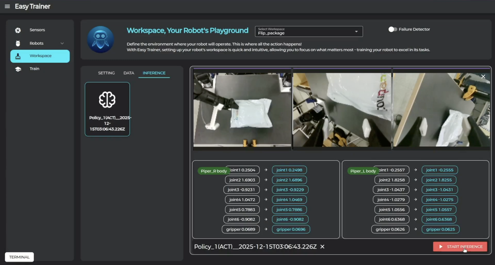
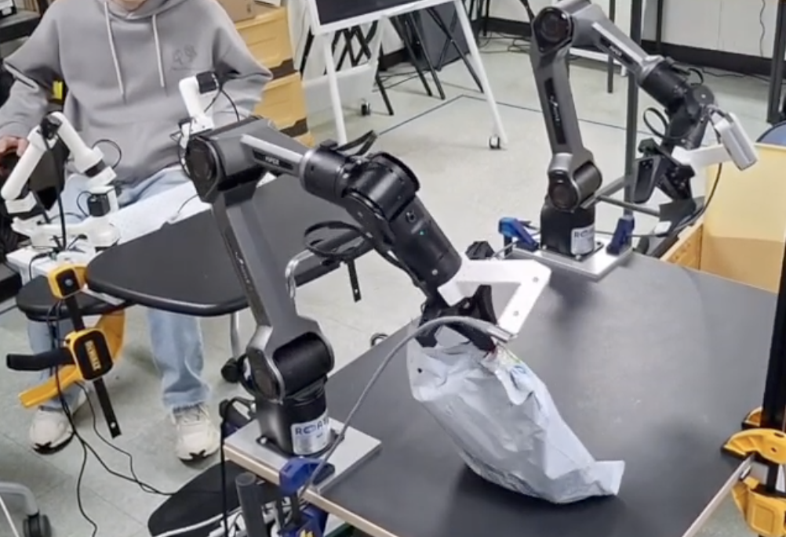

11 Inference
학습된 모델로 로봇을 자율 작동시키는 방법을 안내합니다.
🚀 추론 실행
추론이란?
학습된 모델을 사용하여 로봇이 스스로 작업을 수행하도록 하는 과정입니다.
-
1. 모델 확인

Workspace 탭 → Inference 탭에 학습시킨 모델이 추가됩니다. -
2. 로봇 및 카메라 준비
로봇과 카메라가 켜진 상태인지 확인합니다. -
3. 추론 시작

모델을 클릭한 후 "Start Inference" 버튼을 클릭합니다. -
4. 모니터링
로봇이 작업을 수행하는 동안 이상이 없는지 모니터링합니다.
⚠️ 안전 주의사항
추론 실행 시 로봇 주변에 장애물이 없는지 확인하고, 비상 정지 버튼을 항상 준비하세요.
🎉 완료!
축하합니다! Easy-Trainer의 모든 기능을 배웠습니다. 이제 다양한 작업을 로봇에게 학습시켜 보세요!